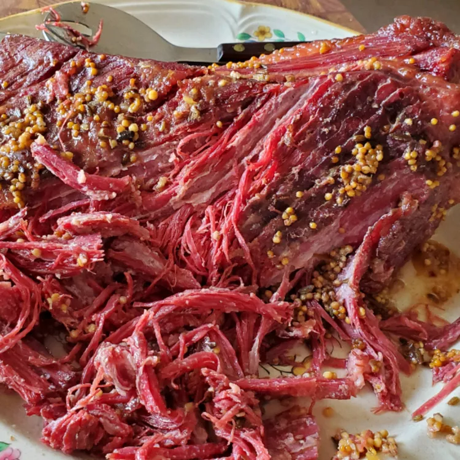

Corned Beef Roast

Description
This roasted corned beef is easy to prepare and wonderful to eat. Plan on 1 hour of roasting time per pound of beef.
Ingredients
- 1 corned beef brisket with spice packet
- 7 small potatoes, peeled and diced
- 4 carrots, peeled and diced
- 1 medium onion, diced
- 3 cloves garlic, chopped
Method
- Preheat the oven to 150 degrees
- Place corned beef brisket in the center of a roasting pan. Arrange potatoes and carrots around the sides; scatter onion and garlic on top of beef. Empty seasoning packet over beef and pour in enough water to almost cover potatoes. Cover with a lid or heavy aluminum foil.
- Roast in the preheated oven until corned beef is so tender it can be flaked apart with a fork, about 5 to 6 hours.